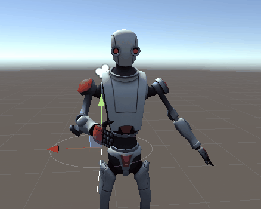
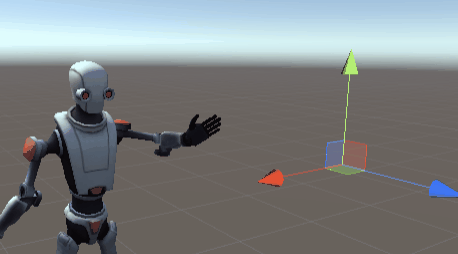

|  |  |
We developed an inverse kinematics system in the Unity game engine for calculating joint angles of a 3D skeleton. Based on the FABRIK algorithm, our system iterates back and forth across a kinematic chain, using linear interpolation to modify each joint's position while also updating its orientation according to user-defined constraints, until the end effector converges on a target. This allows the user to produce smooth animations by simply manipulating targets. We also designed and implemented our own rotational constraint system on top of the FABRIK algorithm, and define our own set of joint types, including hinge joints. We include a convenient interface for animators to specify the properties of each joint, in order to create more realistic postures. Finally, we implemented an animation controller which allows our skeleton model to change animations instantaneously according to user input.
We chose FABRIK because of its relative simplicity, and on account of linear interpolation being its primary operation, which makes it very similar to problems we have dealt with previously in this class. The original paper gives a more complete description of the algorithm, but here is our own summary of basic process:
First, the transform (position and orientation) of the end effector (the hand, foot, etc.) is initialized to a target transform. Then, we iterate down the kinematic chain towards the base, updating each joint's position by interpolating between its previous position and the previous joint's current position. The interpolation parameter is chosen such that the distance between each adjacent pair of joints is fixed, in order to prevent unrealistic stretching or contracting. Once we reach the base, we repeat the process in the opposite direction. We continue to traverse back and forth until the end effector converges on the target.
One of the difficulties associated with the inverse kinematics problem is the issue of multiple solutions. For any target specified, there may be many valid solutions in configuration space. We would like our system to produce solutions that are valid for the human body, or whatever type of body we are trying to animate. For example, we generally don't want a character's elbow to bend backward or the shoulder to flip upside down. Therefore, to restrict the range of possible solutions, the user may also wish to specify constraints on some of the angles and orientations of the model.
The core FABRIK framework does not impose any specific method of incorporating constraints, but Aristidou & Lasenby suggest one way of doing this. Most importantly, they mention that constraints can be enforced at every step in the algorithm, and furthermore that this can result in a more feasible final posture (Aristidou & Lasenby, 2011, p. 248). We also find that our animations evolve more smoothly using this method. However, we actually found more inspiration from Jonathan Blow’s 2002 paper in terms of how to incorporate the constraints themselves into FABRIK; namely, at each iterative step, we ask the questions “’what direction does the bone point in?’ and ‘how twisted is it?’” (Blow, 2002).
To illustrate clearly how our implementation handles constraints, let’s start in the second part of the outer loop, i.e. the base-to-end traversal. We’ve just updated our joint’s position, and now need to determine its orientation and the position of the next joint. We start by taking its prior orientation and rotating it to align it with the orientation of the previous joint. Unity has a built-in function called FromToRotation which supposedly finds the shortest such rotation, and which we use to perform this realignment. Now that both orientations are aligned with the same axis, we take the angle difference between them (around the axis) using a quaternion inverse multiplication, and clamp it according to the user-defined angle limits.
The first step, the realignment, gives us a frame of reference in which to impose our “twist” constraints in the second step. If we did not have this frame of reference, we would not have a well-defined concept of twisting. In other words, we define twist with respect to the previous segment, and therefore must realign to that axis, else we would have no other angle to compare with, and the clamp would be meaningless.
We’ve dealt with the twist (1 degree of freedom), but we still need to figure out the direction of this joint’s orientation (2 degrees of freedom), which depends on the position of the next joint. The core FABRIK algorithm would determine the next point’s position from the current point simply by interpolating in the direction of its previous position, but we need a way of restricting this direction if we are to represent special types of joints. For example, a hinge joint restricts positions to a 2D plane, so we would want to project the next point’s location onto that plane.
So we create another function, which gets the constrained direction vector between two points, according to the “type” of the first joint, of which we’d ideally define several. So far we have only implemented the aforementioned hinge joint, but the possibility for a ball-and-socket joint is also there. For something like this, Aristidou & Lasenby propose a conic section hung in space (2011, p. 248). All one would need to do is add another entry to our JointType enumeration, and provide a corresponding switch case to the get_direction function.

We tried to make our constraint system convenient enough that an artist/animator could implement their own joint types to fit the requirements of a particular animation. The Unity engine allows developers to "serialize" variables for easy access in the editor. We thus designed our IK interface to allow the user to easily specify specific joint types as well as angle bounds:
Once we have our direction, we re-reorient the current joint with FromToRotation, and determine the next joint’s position with interpolation. This process repeats for every joint up to the end effector. When traversing the other direction (end to base), we essentially perform all of these steps in a different order: get the new direction (backwards), interpolate, reorient, and finally constrain the twist.
Recall that we define each joint’s constraints with respect to the previous joint in the base-to-end direction. Therefore, when traversing end-to-base, we’d like some way of inverting the constraints so that we can keep using the same functions. We added a copy constructor to our Joint class to simplify this inversion. For twist constraints, as well as our hinge joint implementation, this amounts to switching and negating the min and max angles, but the method of inversion may depend on the type of joint. Thus, implementing new joint types also requires defining how they should be inverted during end-to-base traversal.
Our IK system allows an animator to animate a model in real time by adjusting the position of target objects for each end effector. However, we also wanted to allow users to save and easily swap between animation clips. To accomplish this in our system, one creates a series of poses by manipulating the position and rotation of the target object, then saves each of those values as a keyframe. By interpolating between those keyframes (and thus moving the target object through space), we are able to produce smooth and continuous animation. By then binding each animation to a unique value, we can swap between animation clips at the press of a button.
There was one critical problem that we struggled with throughout the entire duration of this project, and it involves our choice of skeleton model. When the IK system was first being developed, it was only tested on the right arm of the robot. This was convenient because the x-axis of each joint’s local transform in the right arm (the red arrow in the image below) points in the same direction along the arm:

However, the other limbs are not so well-aligned. The elbow of the left arm is not aligned with the arm at all:

Ideally, the artist creating the model would take special care to align these transforms according to some convention. However, we couldn’t figure out how to fix these alignments in the editor, so we wanted to see if we could deal with this discrepancy in our program. Once we had our IK system working for the right arm, we then tried to generalize it by calculating every joint’s intrinsic “alignment” during runtime, and taking that into account when realigning.
To see how this is achieved, we first note that the Unity engine represents each object’s global orientation as a rotation with respect to the world basis. For example, if you want the z-axis of an object’s local transform, you take its global orientation quaternion and multiply with the unit vector (0, 0, 1). If a joint’s “alignment,” the direction that points locally along the arm, is not guaranteed to be on any particular axis (as is the case with our robot’s left elbow), we must find the vector that multiplies with the joint’s orientation to result in this alignment direction. This process amounts to taking the direction of the next joint, and transforming it from world space to the current joint’s local space (Unity provides this operation via InverseTransformDirection). We get the actual direction of a joint by multiplying its orientation by its alignment vector.
Another problem we’ve been dealing with is the issue of how to handle joint constraints at the base (in our model, this is the hip or the shoulder). We addressed this by specifying an extra transform as the "origin" for the kinematic chain. Joint constraints for the base are defined relative to this origin.
One of the first animations we were able to produce was a simple handshake with the right arm. Observe how the elbow and shoulder both evolve smoothly with the target transform:
The animation controller allows us to switch between animation in real time:
The above animations were made using Unity’s own animation controller framework, but we also took a shot at creating our manual controller. This script stores a set of transforms as keyframes, each with a duration, as well as a Boolean indicating whether to interpolate linearly or with a smoothstep (Hermite polynomial) while near that keyframe. For example, here is a walking animation that we made with our own controller:
It's not as convincing as some of the other animations, but consider that this was accomplished essentially without any of Unity’s extra tools. It contains plenty of freedom in which to develop more accurate postures; it can certainly be refined with better constraints, better joint alignment, and/or more keyframes.
Aristidou, A., & Lasenby, J. (2011). FABRIK: A fast, iterative solver for the Inverse Kinematics problem. Graphical Models, 73 (5), 243-260. https://doi.org/10.1016/j.gmod.2011.05.003
Blow, J. (April 2002). Inverse Kinematics with Quaternion Joint Limits. The Inner Product. http://number-none.com/product/IK%20with%20Quaternion%20Joint%20Limits/
Brian Stone: inverse kinematics system, joint constraint system and interface, researching IK techniques
Eric McCormick: animation controller, wave animation
Alex Chan: handshake and walking animations
Jinwoo Park: reaching animation and constraint analysis
All group members contributed to the proposal, milestone and final report
A key problem in computer animation is the kinematics of skeletons: moving joints in a way that looks realistic and satisfies specified constraints. We are building an inverse kinematics analytic solver to calculate joint positions and angles solely from the location of the end effector. This problem is difficult because there may be multiple solutions or none at all, and determining which of these solutions are realistic to our eyes and also physically accurate is a challenge in itself. We hope to research this problem, and the techniques others have used to solve it, with a system modeled in the Unity 3D engine.
For our current implementation, we chose to use FABRIK (Forward And Backward Reaching Inverse Kinematics): http://www.andreasaristidou.com/publications/papers/CUEDF-INFENG,%20TR-632.pdf.
The algorithm begins by setting the end effector’s position to the target’s. It then iteratives through the joints from end effector to base, updating each’s position by linear interpolation between its current position and the previous joint’s updated position (using the fraction of this distance covered by the fixed length of the segment as the interpolation parameter). Upon reaching the base, we fix the base’s position to its original value, and then perform the same exact process in the opposite direction, from base to end effector. This entire process is repeated until the end effector’s distance from the target is within some small tolerance.
On its own, this iterative algorithm consists entirely of linear interpolations and is much simpler, and supposedly faster (although we haven’t tested this), than other methods that use matrices or rotational angles, such as cyclic coordinate descent and the Jacobian inverse method. However, we ended up having to make some rotational angle calculations anyway, because of the way Unity, or maybe the particular asset we are using for the robot skeleton (Space Robot Kyle), handles hierarchical transforms. Modifying only the position of each joint did not have the desired effect:
So we had to extend our algorithm to find the orientation of each joint from their positions. Now the robot’s hand follows the target transform:
We also attempted to implement angle constraints on each joint. These constraints would be expressed ranges of rotational angles with respect to the transform of the parent joint. However, rotations in 3D are not commutative, so trying to clamp the Euler angles within these ranges has not worked. We are currently looking for other ways to solve this problem. Once it is solved, we should have all of the control we need to get our robot to make realistic poses and movements.
We have decided that even a small game would be an unrealistic goal with the time we have left at this point. However, we are working on a small “game” environment for the robot to roam around in and show off its moves.
Slides:
https://docs.google.com/presentation/d/1WSBDuMqlEzRslKe-eSLp5p3IFXCTuhjTOrhIeXlNqTQ/edit?usp=sharing
Video:
https://drive.google.com/open?id=1xI4NkD-wHhgMDw_S8heHI_frKhh29FxQ